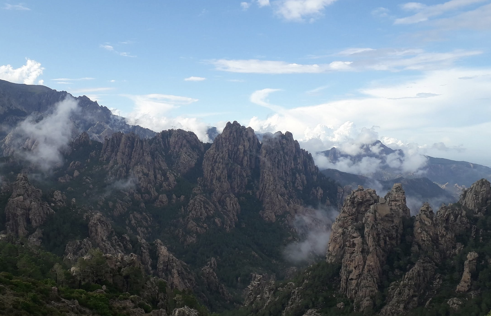
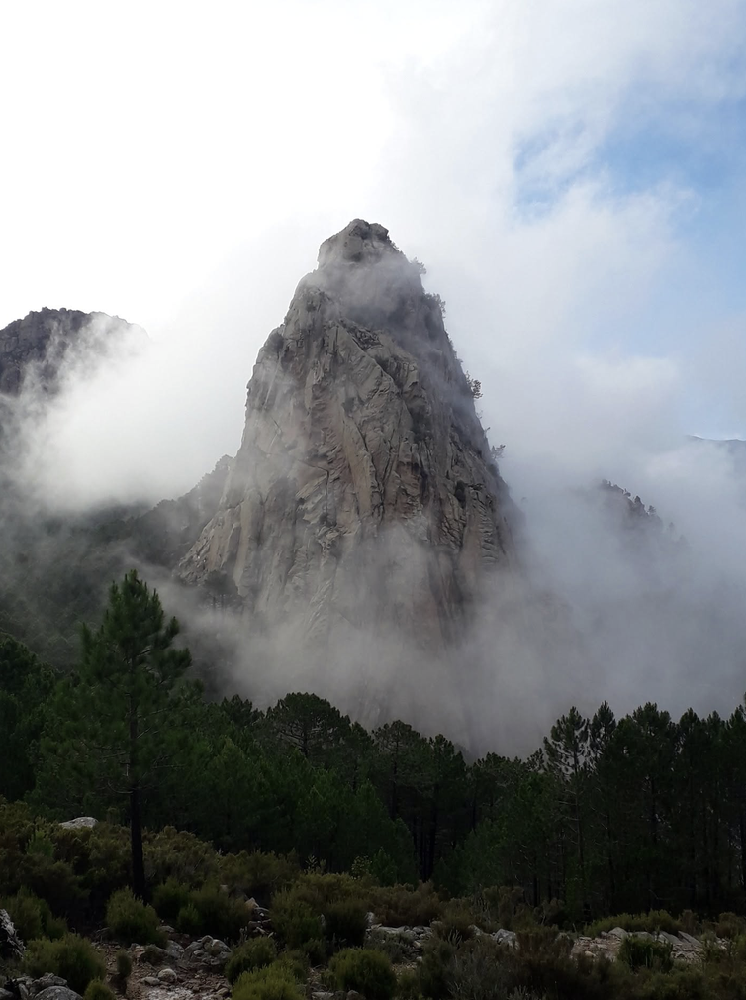
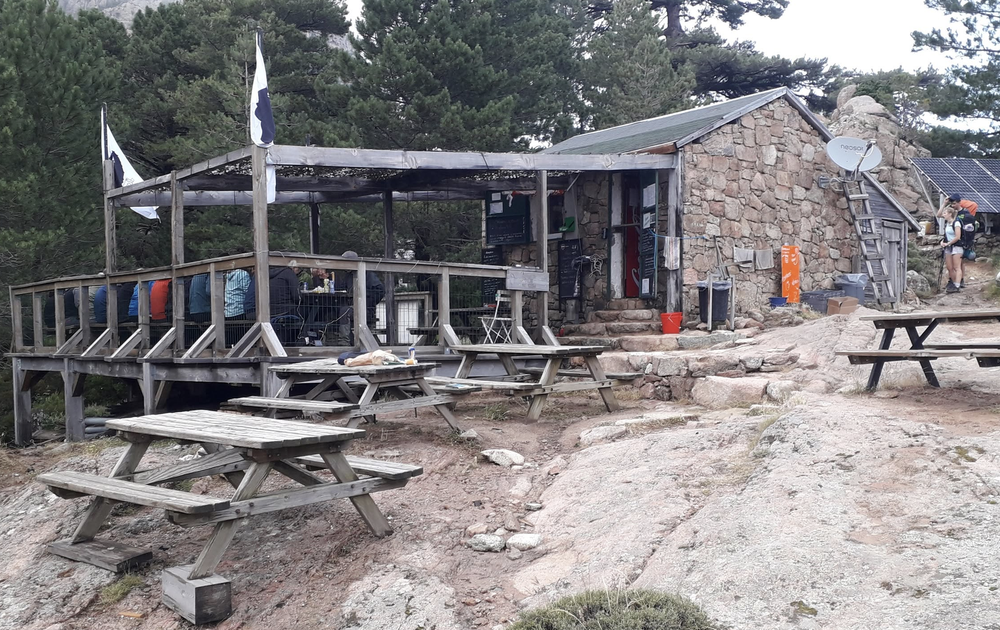

Preface
Flying will forever fill me with a sense of wonder - a kind of magic woven into the fabric of science and technology. Seated by the aisle, I leaned over, hoping to catch a glimpse of Corsica’s mountains as they rose majestically from the shoreline. Further inland the peaks were barren and steep while those near the water were round and coated with trees. What a serendipitous time to be alive, where such experiences are possible. I couldn't wait to explore this ragged terrain, and I was vividly mulling over my options for reaching the trail. I didn't even know where to begin - Conca in the southeast or Calenzana in the northwest? I would have to consider it once reaching the town of Ajaccio, which, at that very moment, slowly appeared out of the window.
Stepping out of the plane, I was greeted by a warm and salty breeze. I was surprised that we had to show our passports at the airport, as the flight was within the Schengen area. The process was smooth however, and within minutes, I was outside and on my way. I didn’t take the bus, nor did I try to take the train. Whenever possible, I prefer walking in a new area so I can immerse myself completely. I followed a wide path along the road, and I was surprised to encounter many people so near the airport, running or walking. Eventually, I turned left as I was approaching the sandy beach. I took pleasure in sauntering barefoot on the wet sand and listening to the rhythmic sound of the waves crashing delicately against it. The sun was slowly dipping lower towards the horizon, transforming the sky into its daily spectacle, with hues of dark blue, red, and orange. I had a strong urge to take a bath, and I even considered spending the night near the beach. But without food, no functioning mobile phone, and curious to discover the town, I decided to press on. I walked along a busy road, passing through more tranquil neighborhoods whenever possible, and for someone coming from a cycle-friendly town, I was astonished to find this one empty of bikers. Even the train, a nearly empty regional TER, made a triste impression as it slowly moved with a rhythmic clickety-clack toward Ajaccio. I was relieved to see that its center stood in stark contrast to its car-centric extension of the 20th century. Wide pavements filled the streets, with plenty of shops on either side, and the traffic here was considerably slower. The colorful five-floor-high buildings were strongly dominated by Italian architecture, with their pastel-colored facades, wooden shutters, and arcades. By now, a cool wind was coming from the sea. After quickly buying food and a Pietra - the famous local beer - I sat on a wall and enjoyed immersing myself completely in this new place; listening to the squawking of the seagulls, the high-pitched whine of a passing motorcycle, and the French chatter of nearby people. These are the moments when I am happy being alone, attentive to the smallest details and fully soaking it in.
After my dinner, which consisted of a baguette, cheese, and pork saucisson, I intended to find out about my options for reaching either Calenzena or Conca. Being still without a mobile phone, I started asking the locals about what they thought would be easier to reach via local transportation. I fancied taking the train, but it turned out that only a few ran per day. Hitchhiking was also on my mind; or perhaps I could take a bus to Porto-Vecchio early in the morning; maybe I could even combine it with a stop in the town of Bonifacio? I soon realized that this was rather a problem for tomorrow and decided to spend my remaining time finding a shop where I could purchase a SIM card and after that a place to spend the night. People were also increasingly concerned about my questions, wondering what I was still doing outside at that time. One of them, an older man pulling a small trolley near the main bus stop in Ajaccio, was intrigued by my question before adding, "I hope you have more than this small bag on you and some proper shoes, you won't make it very far with this equipment. The GR 20 is no joke, people die there every year! It's tough terrain, and the weather can be very harsh." I assured him that I had a place for the night and that, of course, I had more with me than this 30-liter rucksack. A gentle lie, for I couldn’t be bothered explaining him the feasibility of my undertaking.
I soon found a small shop next to the main road. The vendor was a friendly young man who tried his best to help me. After explaining the different SIM card options, I chose the one that seemed to best suit my needs. I soon realized, however, that the SIM card didn't work. We even implemented it into the young man's phone to find out whether the problem was the SIM card or my mobile phone. As it turned out, it was the latter that didn't work. It meant that I would not have any connection during my entire trip. This first bothered me. After a phone call with my mom whom I promised to call upon arrival, I even started panicking. The fear was of course completely unfounded. I had everything I needed to complete the trail and I knew that many sections didn't provide any connection. Hence, not a having a phone would not massively change my condition. How did people get along before its widespread use? We just got so accustomed to it that we feel uncomfortable whenever we don't have it with us. Therefore, I decided to change the narrative and convinced myself that this was the chance to fully appreciate my time here. I will have no distractions, no notifications and no bad conscience of not responding or calling. It would be only me and the physical world.
I enjoyed a chat with the young man who was curious to know more about my desire to complete the GR 20. He warned me about the high prices of the refuges and advised me to take the bus to Porto-Vecchio the next morning, wishing me the best. I thanked him for the information and his kind help, for without his support, I would not have been able to inform my mom about my predicament. Back outside, I walked up the hill behind Ajaccio, hoping to find a suitable spot for the night. It didn't take me long to find what I was looking for. A stair was leading to a secluded asphalt court, which was in a rather desolate state. On its side, an aluminum-plated industrial building filled the remaining space and you could hear the low humming of a machine inside - perhaps the vibration of a transformer's core. Next to a fence facing the old town and the sea, there was a section with some high grass. It was wet, however, for it rained this afternoon. This was not ideal for it would mean condensation in the morning. But my tent required some soil to plant my stakes into the ground and I was reluctant to sleep right next to the building for I feared that some drunk people might come here later during the night. Not that they pose a threat. Yet, people in such a state tend to try to help or converse with you and I was eager to be left alone. The tall grass would perfectly hide my green tent in the dark, assuring me an undisturbed sleep. At least, so I thought. Once inside, the tent wide open, it didn't take much time for condensation to build up. I tried to ignore it, but when the first drops started falling on my sleeping bag, I was forced to resign. I would not spend the night here. I trudged over to the nearby building, found a dry, smooth spot under a canopy and laid my mattress, sleeping bag and pillow on the ground after clearing off the pebbles. I just hoped no one would wake me up. Tired as I was, it didn't take long for me to fall asleep.
The next day, the alarm clock on my phone woke me up at 5:30 am. I slept rather well, only waking up once during the night. After lingering for another quarter-hour in my comfy mattress, pondering about my schedule for the day, I was feeling a rise of excitement about reaching my destination Conca. After packing my stuff and having a simple breakfast, which was identical to yesterday's dinner, I set off to reach the old town. The temperatures climbed rapidly and soon I could feel the scorching Mediterranean sun on my skin. I happened to sleep near a school and I hence encountered the first students walking up while I was sauntering in the opposite direction. I love the morning hours, when a town slowly awakens. Perhaps my most memorable experience so far was my time in Sienna. Sleeping in a hamac outside the town's fortification and not having a tarp with me, I was forced to pack my few belongings at 4:30 in the morning as a storm passed, unleashing heavy drops which filled the air with the distinctive fresh earthen summer aroma. Luckily, I found shelter under the Piazza del Mercato. Soon after, the rain stopped as the thick clouds continued their path. As the first light of day appeared across the horizon, the sky soon transformed into a splendid interplay of colors and I felt very fortunate to witness such ephemeral beauty. Shortly afterwards, on my way to the train station, I crossed the famous Piazza del Campo and was surprised to find it still empty. The town lay yet in quiet slumber, even here, where masses of tourists usually fill the square. I could not resist the temptation and soon found myself sitting in the square's fountain, enjoying my morning bath with view over the iconic Palazzo Publico. I felt like a king, and in that brief moment, I considered this place my private domain. After a while, a morning runner traversed the piazza and spotted me in the fountain, body fully under water. He simply grinned and gave me a thumbs-up, to which I grinned back. I put my clothes on shortly after and ambled my way through old Siena, which by now was filled with the quiet bustle of morning deliveries. Ajaccio was in that same state when I roamed the old streets, and a few market stands were already set up under the wide roof of the Marcatu d’Aiacciu, providing protection against the sun. The place was filled with the pleasant aroma of olives, cheese, fresh bread, and a wide variety of cured meats. I also had a quick look at the House of Bonaparte, where the later French emperor Napoleon was born in 1769, a few days after Corsica was defeated by the royalist French army, thus falling into the hands of France. Even though many people admire him, I regard him as yet another tyrant. No doubt a brilliant strategist who was not only successful on the battlefield but also knew how to run a state and use the ideals of the French Revolution to extend his influence over Europe. It is a certain idea of greatness that people admire. Yet, he also reintroduced slavery in 1802 after it was abolished by the National Convention in 1794, held France firmly under his grip through authoritarian rule and led numerous wars of expansion aimed at imperial domination. Hence to me, even though he helped spread republican ideals, he remains another despot who was avid of fame and power.
I strolled back towards the market and happened to walk by the tourist office, which, of course, was still closed. Fortunately, it did provide internet! I quickly grabbed my phone and searched for the bus schedule for Porto-Vecchio. I soon realized it was about to leave, so I immediately set off. Thankfully, the bus station was close and a few people equipped with heavy backpacks assured me that they also intended to reach Conca via the town Porto-Vecchio. I had a brief chat with one hiker, a father accompanied by his wife and children, before getting on the bus. They were only tackling sections of the GR 20 and warned me that the mountains had seen heavy rainfall in the past few days, with temperatures remaining rather chilly. They also let me know that the weather would improve in the upcoming days and wished me good luck on the trail. I thanked them for the valuable information, hopped in the air-conditioned metal cocoon and enjoyed the ride in my comfortable seat near the window. The next couple of hours, I would be passing through picturesque villages perched on mountain slopes, surrounded by verdant fields and Corsican pine forests. I have a faible for dense urban spaces built with natural regional building materials and veiled by greenery. The villages inland tended to be made of big rectangular blocks of stone and covered by orange terracotta tiles, thus missing the vibrant plaster often seen along the coast. They were honest structures that reflected perfectly the land in which they stood. It was hard not to get off the bus, and I was considering delaying my trip so I could spend a day discovering the region by walking from village to village, perhaps combining it with hitchhiking. I finally decided to stick to the original plan, promising, however, to return here another time by bicycle. We finally arrived in Porto-Vecchio around noon, and I was happy to simply move my legs after sitting for so long. I tend to stand up after forty minutes; hence, I strongly prefer taking the train, as it allows you to walk and, when traveling far, enjoy a drink at the bar. I met two other hikers from Lille while getting off, and after realizing that the next bus heading towards Conca would leave in roughly three hours, we decided to head towards the tourist office. With time being on my side, I was determined to buy the missing gear at the nearby Decathlon (a French brand selling sports equipment) and a supermarket for food. After a young man at the office kindly showed me the way on a map, I strutted through the old town of Porto-Vecchio and then towards the town's peripheral car-centric commercial area. Interestingly, the town offers free transportation in the form of an electric minibus circumnavigating it. Feeling like walking, I decided not to take it, but I did appreciate the offer. In the sports shop, I bought the missing equipment: one merino shirt, granola bars, energy gels, a thin climbing rope, an Opinel, a map of the GR 20, a foldable spoon, a reusable emergency blanket, and a foldable 10-liter backpack made of thin polystyrene. The merino shirt was technically designed for women, but that hardly mattered. It draped perfectly over my slim body. The Opinel, the French version of the Swiss knife, would replace the latter, which I was forced to leave at home. In the 10-liter backpack, I packed my groceries as well as my bars and energy gels. I later bought a small Pietra, an Orangina, a baguette, cheese, and saucisson at the nearby supermarket. Now truly feeling ready, I strolled back to the bus station and waited near the port, enjoying my beer and the warm afternoon weather.
The bus arrived shortly before 3 pm. The driver was a young man with a beard, slicked-back hairstyle and brown hair, wearing a metal cross necklace and large rectangular glasses. He drove fast, threading his way through the narrow road. I was annoyed by his lack of respect for cyclists, honking at them from afar if they were not riding entirely on the right side. He overtook them dangerously close, leaving a gap of no more than thirty centimeters. Interestingly, he did not complain about the many scooters, waiting patiently behind and providing a generous distance when passing. It was clear that cyclists were perceived as a nuisance, merely roaming the roads for leisure. The mentality here was worlds apart from that of the Netherlands or Denmark, where people of all ages use it. The benefits have been demonstrated in numerous studies, and I wish everyone to experience a town such as Amsterdam or Utrecht at least once in their lifetime. I firmly believe it would inspire people. Questioning the current state, and with imagination and playfulness, pondering how to enhance the status quo. Or, as Rob Hopkins, author and founder of the Transition Town movement, puts it: shifting from what is to what if.

We finally reached Conca after roughly one hour near the pub Le Soleil Levant, where hikers who finished the GR 20 were celebrating their achievement. It had a vibe similar to the iconic Oktoberfest in Bavaria, only people were wearing hiking gear instead of Lederhose or Dirndl, and the music was not some German Schlager, a genre with catchy melodies, simple, heartfelt lyrics, and often upbeat tempos. The two hikers from Lille asked the driver whether he thought it was still possible to reach the first refuge this afternoon, considering we would be starting our journey up into the Corsican mountains at four o'clock in the afternoon. The response was a quick and simple impossible, pointing out that it would take at least five hours to reach it. I didn't care if I would make it to the refuge. All I knew was that I wanted to walk and finally explore the wild part of Corsica. They had the same idea as they started preparing their heavy backpacks for the hike. We set off together, soon leaving Conca and the asphalt road for a narrow path leading through the forest. I soon steamed ahead, leaving them behind after replenishing our water bottles at a small fountain beside a pond. I simply couldn't wait to gain some height. Once out of the forest, you had a view of the surrounding ragged, steep granite cliffs. Clouds were perched over the valley, and in the distance, you could spot the sea and herds of cumulus clouds, topped by high altitude cirrus. Just after passing perhaps one of the most beautiful cliffs on the GR 20, the cone-shaped Puntà di í Palíri, I arrived at the Refuge d'i Paliri at seven o'clock. For many, it was their last night on the GR 20, as it was more common to do the trail from north to south. The refuge was in the middle of a dense pine forest, with tents spread around the reception hut, often standing on the granite rock covering most of the campsite. Solar panels were installed on metal frames and there were a dozen rectangular wooden picnic tables. I bought an Orangina at the reception and sat down. The smell of pasta filled the cool evening air as other hikers were having dinner. The dish had a rich tomato sauce, cured meat, cheese, and local herbs. It was simple yet flavorful. Meanwhile, I drank my sugary drink and took bites of baguette, cheese, and saucisson. I was eager to continue even further, for I did not feel tired. I soon started talking with a group of hikers sitting at the next table before one of the workers at the refuge came over and asked if I would need a tent for the night. I thanked her for asking but explained that I intended to continue soon. This led to the hikers asking if I had set a challenge to finish the trail after a certain number of days. Most people complete it in roughly two weeks, with seven days for the fast ones. I told them that I hadn't planned anything specific, that this was my first time in Corsica, and that I would go with the flow. They wished me good luck before I set off once more. I enjoyed the climb of the mountain ahead, disappearing in the thick evening mist. The trail was more technical and I started running. I was having fun and, being now the sole hiker on the trail, I reveled being alone, shouting a fiery chehoo of joy. It didn't take long for me to reach the small village of Bavella. To the east, the jagged mountain range of the Aiguilles de Bavella, with its towering granite spires, was bathed in a beautiful warm orange hue. I decided to end it here for today. I put on my clothes for the evening after washing my armpits and hair at a nearby fountain. I quickly rinsed the Kenyan T-shirt I had worn during my hike and spread it on a still-warm stone so it would dry faster. Then I took out my dinner from my rucksack - some bread, cheese, saucisson, and cashews - and ate while watching the steep cliffs slowly disappear into the mist, as the night sky gave way to thick clouds. The temperature was dropping rapidly, and not knowing where to sleep yet, I decided to head to the local pub and ask if they had a bed for the night. I was relieved to hear that they didn't. I wanted to sleep outside, and seeing the surrounding pine forest, I lamented not having brought my hammock and tarp instead of this cheap tent that didn't seem to work. I longed for a quiet place in nature rather than a sticky room I had to share. I wanted to hear the rustling of the tree branches and the hoot of an owl before closing my eyes and drifting off.

Thankfully, there was another option. Not quite legal, but since it would harm neither people nor nature, it was one of those situations where I did not hesitate. Earlier, I had noticed a small workshop a short distance from the inn. The door was locked, but one of the tiny windows could be opened. Curious, I peered inside. It was little more than a narrow storage room, cluttered with paint cans, tools, and bits of timber. The air smelled of fresh paint and sawdust. Not exactly what one would call comfortable, but it would do for the night. It was dry, sheltered and, most importantly, hidden from view.
Having solved this issue, I bought a Pietra at the pub and sat alone at the empty bar, watching through the windows as the final light faded from the granite spires of the Aiguilles de Bavella. The warm orange glow slowly gave way to deep shades of blue as the mountains disappeared into the gathering dusk. Once darkness had settled and I had finished my beer, I quietly returned to the workshop. After brushing away some dust from the concrete floor, I rolled out my mattress and sleeping bag. It was hardly luxurious, and I wondered whether the strong smell of fresh paint would upset my stomach. Yet it was quiet, with only the distant murmur of voices and the occasional passing car breaking the silence.
